This chapter opens Part III, where the book stops only using models and starts training them. An embedding model turns text into a vector so that texts that are "alike" end up close together, and the chapter shows that you decide what "alike" means by the examples you show it. The main tool is contrastive learning: show the model pairs that are similar and pairs that are not, and it learns what separates them. Using the sentence-transformers library (SBERT), the authors train a BERT model from scratch on 50,000 NLI (natural language inference) sentence pairs and watch the score climb as they swap losses: softmax loss 0.59, cosine similarity loss 0.72, multiple negatives ranking loss 0.81. Then they fine-tune an already-trained model (0.85), stretch a small labeled set with Augmented SBERT (0.71 with only 20% of the labels), and train with no labels at all using TSDAE (0.70), ending with how TSDAE helps adapt a model to a new domain.
The chapter is a chain of "here is how to build it → here is how to make it better → here is what to do when you have less data". Read the rows top to bottom; each orange box is the idea the next row reacts to.
Bar length = score out of 1.0. All numbers are the book's printed evaluator outputs. Each run uses a different data setup, so compare with care (for example the fine-tuned MiniLM had already seen all of MNLI).
Page 309 is only the part title, "Part III: Training and Fine-Tuning Language Models", and page 310 is blank. There is no intro text. The title itself tells you the shift in the book:
Parts I and II were like learning to drive a hired cab: you learn how the car works, then you use it to go places. Part III is taking the car to a mechanic and tuning the engine for your roads. Where it breaks: tuning a model does not just make it faster; it changes what it "notices" (for embeddings: what counts as similar).
Text embedding models sit at the foundation of many powerful NLP (natural language processing) applications. They even power parts of already-impressive technologies like text generation models. The book has already used embedding models many times:
The authors say it is nearly impossible to overstate how important embedding models are, because they drive so many applications. So this chapter covers a variety of ways to create an embedding model and to fine-tune one, to increase its representative and semantic power (how well its vectors capture what a text means).
An embedding model is like the sorting clerk at a big post office: every letter gets a PIN code, and letters with nearby PIN codes end up in the same bag. A good clerk gives nearby codes to letters that "belong together". This chapter is about training that clerk. Where it breaks: a PIN code is 6 digits; an embedding is hundreds of numbers, and "belonging together" can mean topic, sentiment, or question–answer, depending on training.
Q: "Why would you fine-tune an embedding model instead of just using OpenAI's or a public one?" Off-the-shelf embedders define 'similar' the way their training data did. If my domain has its own jargon or my notion of a match is different (for example question → correct answer, not topic overlap), retrieval quality drops. Fine-tuning with contrastive pairs from my own data moves the right things closer, which directly improves recall in RAG.
In a RAG-memory product this is the lever after chunking and reranking.
Embeddings were already discussed in Chapters 4, 5 and 8. Before training one, the book recaps the basics.
Unstructured text is hard to process directly. You cannot do arithmetic on it, plot it, or easily build actionable results from it. So you first convert it to numeric representations. This is called embedding the input, and the output vectors are called embeddings.
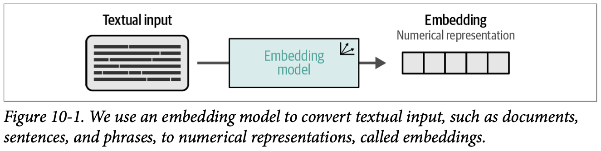
How to read this figure. Left: a block of text (a document, sentence or phrase). Middle: the embedding model box (the small axis icon is the book's symbol for "produces vectors"). Right: the embedding, drawn as a row of cells, each cell one number. Any text length goes in; one fixed-size row of numbers comes out.
The model that does this is typically an LLM, which the book calls an embedding model. Its main job: represent the text as accurately as possible as an embedding.
What does "accurate" mean? Usually we want to capture the semantic nature, the meaning, of a document. If we capture the core of what it communicates, we have captured what it is about. In practice: documents that are similar should get similar vectors, and documents about completely different things should get dissimilar vectors. This is semantic similarity (Figure 10-2).
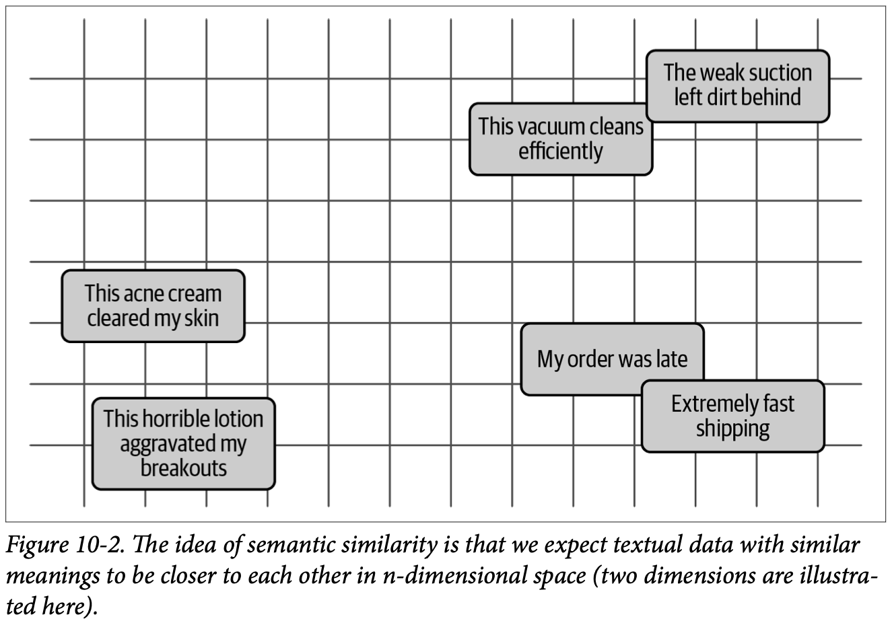
How to read this figure. Six product reviews are placed on a 2D grid. They pair up by topic: top right, the two vacuum-cleaner reviews ("This vacuum cleans efficiently", "The weak suction left dirt behind"); left, the two skin-care reviews ("This acne cream cleared my skin", "This horrible lotion aggravated my breakouts"); bottom right, the two delivery reviews ("My order was late", "Extremely fast shipping"). Notice each pair holds one positive and one negative review: here, topic wins and sentiment is ignored. The book stresses this is a simplified 2D picture; real embeddings live in high-dimensional spaces (hundreds of dimensions).
But an embedding model can be trained for other purposes. If you are building a sentiment classifier, you care more about sentiment than topic. You can fine-tune the model so documents are close by sentiment instead of by meaning (Figure 10-3).
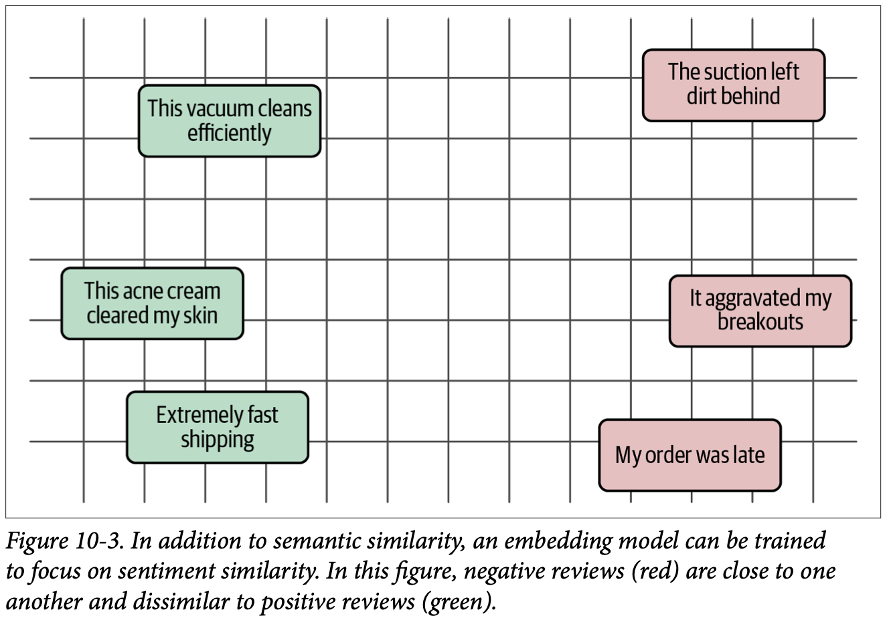
How to read this figure. The same six reviews (two slightly shortened: "The suction left dirt behind", "It aggravated my breakouts"). Now all green (positive) ones sit in a column on the left (vacuum cleans efficiently, acne cream cleared my skin, extremely fast shipping) and all red (negative) ones on the right (suction left dirt, aggravated my breakouts, order was late). Same text, different training, different neighbours. Compare it with Figure 10-2 using the toggle below.
Positions follow the book's two figures roughly; the exact coordinates are drawn by hand.
Either way, an embedding model learns what makes certain documents similar, and we can steer that. Show it enough examples of semantically similar documents and it moves towards meaning; show it examples grouped by sentiment and it moves towards sentiment.
There are many ways to train, fine-tune and guide embedding models, but one of the strongest and most widely used is contrastive learning (next plate).
Say a toy model gives 3-number embeddings (modelled numbers): "acne cream cleared my skin" = (0.9, 0.1, 0.8), "lotion aggravated my breakouts" = (0.8, 0.2, −0.7), "extremely fast shipping" = (0.0, 0.9, 0.7). If dimension 1 ≈ "skin care", 2 ≈ "delivery", 3 ≈ "positive/negative", a meaning-trained model puts weight on dims 1–2, so the two skin reviews are close. A sentiment-trained model would make dim 3 dominate, so "acne cream" (+0.8) would sit next to "fast shipping" (+0.7). Real models don't have readable dimensions like this; the idea is that training decides which differences the distance pays attention to.
Think of a kirana shopkeeper arranging shelves. One shopkeeper groups by category (all soaps together, all dals together). Another groups by price band (everything under ₹50 on one shelf). Same products, different notion of "belongs together". The embedding model is the shelf arrangement; the training data is the shopkeeper's rule. Where it breaks: a shelf has one position per item, but an embedding space has hundreds of directions, so a good model can keep several notions of similarity at once, with one dominating the distance.
Distance in embedding space (usually cosine similarity) is the only thing downstream systems see. Search, clustering and classification all just ask "which vectors are near this one?". So whatever the training signal pushed together becomes "similar" for every application built on top. That is why the choice of training pairs matters more than any other knob in this chapter.
Q: "Is cosine similarity between embeddings a measure of meaning?" Only of whatever the model was trained to treat as similar. A general model clusters by topic, so 'great vacuum' and 'terrible vacuum' can be neighbours. If I need sentiment or question–answer matching, I either pick a model trained for that or fine-tune with pairs that define it.
Contrastive learning is one major technique for both training and fine-tuning text embedding models. It trains the model so that similar documents are closer in vector space and dissimilar documents are further apart. This should sound familiar: it is very similar to the word2vec method from Chapter 2, and it is the idea already drawn in Figures 10-2 and 10-3.
The core belief: the best way to learn and model similarity/dissimilarity is to feed the model examples of similar and dissimilar pairs. To capture what a document means, it often needs to be contrasted with another document, so the model learns what makes them different or similar. This contrasting is powerful and relates to the context in which documents are written.
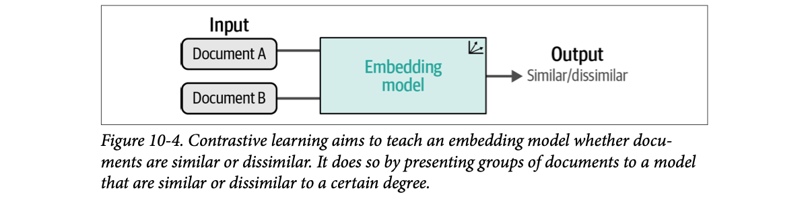
How to read this figure. Input: two documents, A and B. They go through the same embedding model. Output: a judgement, "similar/dissimilar". The point is that the model is always trained on a relation between documents, never on one document alone. "To a certain degree" in the caption hints that the label can be a score, not only yes/no (plate 11).
Another way to see it is through how explanations work. The book retells an anecdote: a reporter asks a robber "Why did you rob a bank?", and he answers "Because that is where the money is." (footnote 1, Alan Garfinkel, Forms of Explanation, 1982). Factually correct, but the reporter meant "why do you rob at all?", not "why banks specifically?". This is a contrastive explanation: understanding a case "Why P?" in contrast to alternatives, "Why P and not Q?" (footnote 2, Tim Miller, 2021). The question becomes clear once you give the alternative: "Why did you rob a bank (P) instead of obeying the law (Q)?"
Embeddings learn the same way. By seeing similar and dissimilar pairs, the model learns what makes things similar or dissimilar and, more importantly, why.
Example: you could teach a model what a dog is by letting it find features like "tail", "nose", "four legs". That is hard, because features are often not well defined and can be read in many ways. A being with a tail, a nose and four legs could also be a cat. To steer the model, you ask: "Why is this a dog and not a cat?" The contrast teaches the features that define the concept and the features that are not related. We get more information when a question is framed as a contrast.
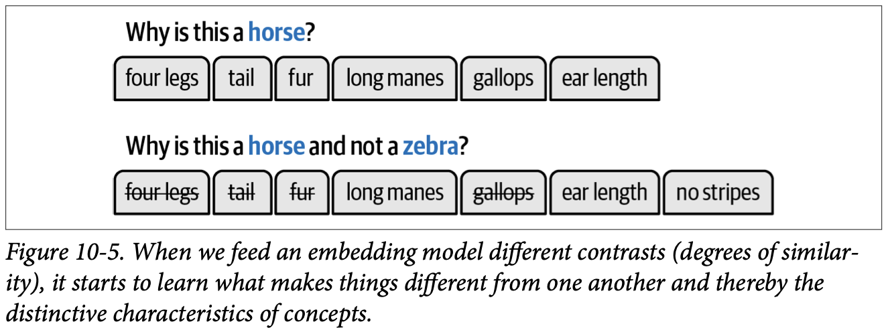
How to read this figure. Top row: "Why is this a horse?" lists six features: four legs, tail, fur, long manes, gallops, ear length. Bottom row: "Why is this a horse and not a zebra?" The features both animals share (four legs, tail, fur, gallops) are struck through because they don't help. What's left are the distinctive ones: long manes, ear length, and a new one that only appears through the contrast, no stripes. The contrast both removes noise and reveals a feature you would never list on its own.
Zebra row follows Figure 10-5. The dog and car rows are modelled examples, not from the book.
There are many ways to apply contrastive learning to text embeddings, but the best-known technique and framework is sentence-transformers (next plate).
A cricket coach teaching a new selector to spot a good fast bowler. Saying "he runs in, bowls, has a strong arm" describes every bowler, including spinners. Showing two bowlers side by side, "why is this one fast and that one not?", points straight at run-up speed and wrist position. Where it breaks: the selector can name the reason; the model never names features, it just moves vectors until the pairs separate.
Without contrast, a model can satisfy "make similar things close" trivially by putting everything close together (all vectors collapse to one point). Negatives (dissimilar examples) forbid that, so the model must find the dimensions that actually tell texts apart. Which negatives you show decides which differences it learns: zebras teach "stripes", dogs teach "hooves". That is the seed of the hard-negatives idea in plate 13.
Q: "Explain contrastive learning in one minute." You train on pairs or triplets: an anchor, a positive that should be near it, and negatives that should be far. The loss pulls positives together and pushes negatives apart in vector space. Negatives are essential, otherwise the model collapses everything together. word2vec's negative sampling, SBERT, CLIP and most modern retrievers all use this.
There are many forms of contrastive learning, but the framework that made it popular in the NLP community is sentence-transformers (footnote 3: Reimers & Gurevych, "Sentence-BERT", 2019). It fixes a major problem of the original BERT approach to sentence embeddings: computational overhead.
Before sentence-transformers, sentence similarity with BERT often used a cross-encoder. A cross-encoder passes both sentences into the Transformer at the same time and predicts how similar they are. It does this by adding a classification head on top of the original architecture that outputs a similarity score.
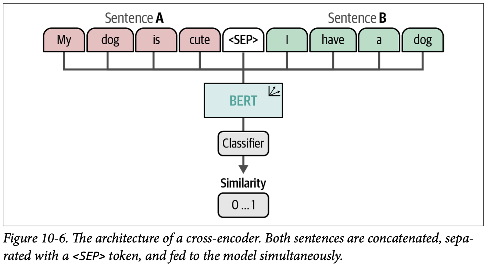
How to read this figure. Top: sentence A ("My dog is cute", red tokens) and sentence B ("I have a dog", green tokens) are glued into one sequence with a <SEP> (separator) token between them. All nine tokens go into a single BERT. On top sits a Classifier head, which outputs one number, Similarity 0…1. Note what is missing: there is no vector per sentence. Because both sentences are inside one forward pass, every token of A can attend to every token of B; that is why cross-encoders are accurate, and why you can't reuse any of the work for a third sentence.
The catch is cost. To find the most similar pair in a collection of 10,000 sentences, a cross-encoder must score every pair: n·(n−1)/2 = 49,995,000 inference computations. That is huge overhead. And a cross-encoder generally does not generate embeddings; it only outputs a score for the pair you gave it.
An obvious workaround: get embeddings from plain BERT by averaging its output layer or by using the [CLS] token (the special first token). But this has been shown to be worse than simply averaging word vectors like GloVe (footnote 4: Pennington, Socher & Manning, 2014). Plain BERT was never trained to make its sentence vectors comparable.
Formula and the 10,000 → 49,995,000 example are the book's. The milliseconds per call (default 10 ms) and the resulting times are modelled.
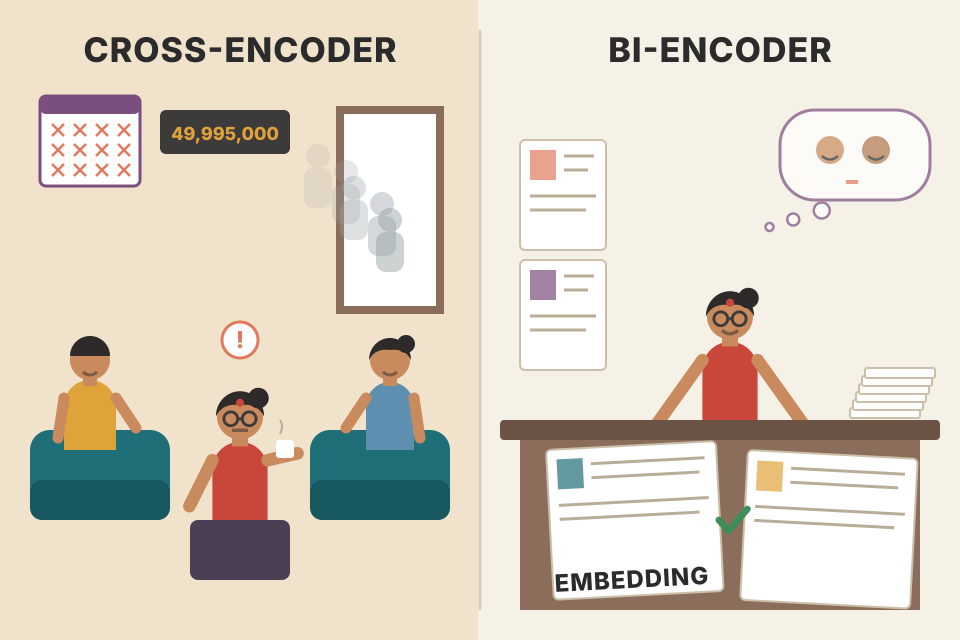
A wedding matchmaker (cross-encoder) who must personally meet both families together for every possible pairing. Great judgement, but with 10,000 profiles that is ~50 million meetings. A biodata format (bi-encoder) lets you summarise each person once on one sheet; then comparing sheets is quick. Where it breaks: the matchmaker sees how two families interact; the sheets can't capture that, which is why cross-encoders stay more accurate.
The cost is in the Transformer forward pass. A cross-encoder needs one pass per pair, so the work grows with n². A model that produces one embedding per sentence needs one pass per sentence (grows with n), and comparing two vectors is a cheap dot product. For search over millions of documents, only the second shape is possible; the document vectors can even be computed ahead of time and stored in a vector database.
Q: "Cross-encoder vs bi-encoder?" A cross-encoder reads query and document together and outputs a relevance score: most accurate, but one forward pass per pair and no reusable vectors. A bi-encoder embeds each text separately, so documents are pre-indexed and search is a nearest-neighbour lookup. In production you retrieve top-k with the bi-encoder, then rerank those few with a cross-encoder.
This is exactly the retrieve-then-rerank stage of a RAG memory service.
The sentence-transformers authors wanted a method that is fast and creates embeddings that can be compared semantically. Their answer is an elegant alternative to the cross-encoder:
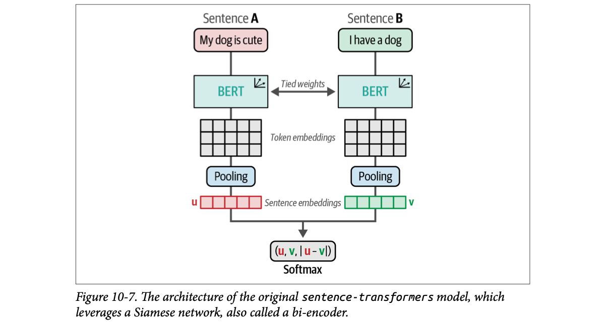
How to read this figure. Two columns, one per sentence. Each sentence goes into a BERT; the double arrow "Tied weights" says the two BERTs are the same model. Each BERT outputs a grid of token embeddings (one row per token). Pooling squashes the grid into one sentence embedding: u for A and v for B. At the bottom, the three pieces (u, v, |u − v|) are joined and sent to a Softmax classifier. That bottom box is only for training; at use time you keep u and v and compare them with cosine similarity.
Training is driven by loss functions, which can have a major impact on performance. In the original setup, the two sentence embeddings are concatenated together with their difference (u, v, |u−v|), and this combined vector is optimised through a softmax classifier (this is the "softmax loss" used in plate 8).
The result is called a bi-encoder or SBERT (sentence-BERT). A bi-encoder is fast and creates accurate sentence representations; cross-encoders generally still perform better, but they do not produce embeddings. Like the cross-encoder, the bi-encoder uses contrastive learning: by optimising the (dis)similarity between pairs of sentences, it eventually learns what makes sentences what they are.
To do contrastive learning you need two things: (1) data made of similar/dissimilar pairs, and (2) a definition of how the model measures and optimises similarity (the loss). Plates 7 and 10–13 cover each.
Vector sizes shrunk to 4 numbers and all values modelled; BERT-base really gives 768 numbers per token.
| Cross-encoder (Fig 10-6) | Bi-encoder / SBERT (Fig 10-7) | |
|---|---|---|
| Input | Both sentences in one sequence, joined by <SEP> | Each sentence separately, same shared-weight model |
| Output | A similarity score for the pair | One fixed-size embedding per sentence |
| Head | Classification head | No classification head; mean pooling |
| Cost for n sentences, all pairs | n·(n−1)/2 passes | n passes + cheap vector maths |
| Quality | Generally better | Fast and accurate, slightly lower |
| Learns by | Contrastive learning on (dis)similar pairs | |
Twins at an exam centre answering the same question paper: same brain (shared weights), different questions (sentences). The examiner grades how alike their answers are. After training, you don't need twins; one person can answer each paper in turn. Where it breaks: real twins differ; "tied weights" means there is literally one model, run twice.
Sharing weights forces both sentences into the same vector space, so u and v are directly comparable. Mean pooling gives every token a vote, so the vector summarises the whole sentence rather than depending on one special token. The |u − v| term hands the classifier the per-dimension differences, which makes it easy for training to push similar sentences towards small differences.
Q: "Why can't I just take BERT's [CLS] vector as a sentence embedding?" Plain BERT was trained for masked-word prediction and next-sentence prediction, not for making sentence vectors comparable. Its [CLS] or averaged outputs did worse than averaged GloVe vectors on similarity. SBERT fixes that by fine-tuning BERT in a Siamese setup with a contrastive objective, so cosine similarity becomes meaningful.
There are many ways to create an embedding model, but generally we look to contrastive learning, because it lets the model learn semantic representations efficiently. It is not free, though. You need to understand three things, which are the next three plates:
Opening a new tiffin service: you need ingredients (data), a recipe and stove (model + loss), and a tasting panel (evaluation). Skimp on any one and the food fails. Where it breaks: in cooking you taste as you go; here the "taste" is a benchmark that may not match your customers (plate 9).
When pretraining an embedding model you will often see data from natural language inference (NLI) datasets. NLI is the task of checking whether, for a given premise, a hypothesis is:
Example: premise "He is in the cinema watching Coco" and hypothesis "He is watching Frozen at home" are a contradiction. Premise "He is in the cinema watching Coco" and hypothesis "In the movie theater he is watching the Disney movie Coco" are an entailment.
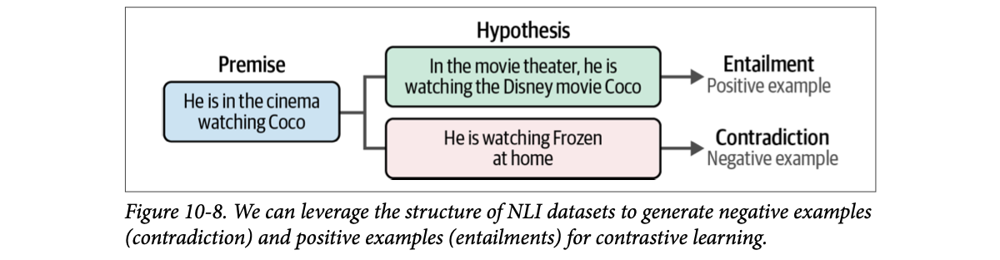
How to read this figure. One premise (blue) on the left splits into two hypotheses. The green one ("In the movie theater, he is watching the Disney movie Coco") is an entailment, so the pair becomes a positive example. The red one ("He is watching Frozen at home") is a contradiction, so the pair becomes a negative example. NLI labels were made for a reasoning task, but read as "how alike are these two?" they are free contrastive data.
Look closely: entailment and contradiction describe how similar two inputs are. So NLI data can generate negatives (contradictions) and positives (entailments) for contrastive learning.
The data used throughout the chapter comes from the GLUE benchmark (General Language Understanding Evaluation), which has nine language-understanding tasks for evaluating and analysing models. One of them is the MNLI corpus (Multi-Genre Natural Language Inference): 392,702 sentence pairs labeled entailment / neutral / contradiction. The book uses a subset of 50,000 pairs so the example doesn't need hours of training. Caveat from the book: the smaller the dataset, the more unstable training or fine-tuning is; if possible prefer larger datasets, as long as the data is still high quality.
from datasets import load_dataset
# Load MNLI dataset from GLUE
# 0 = entailment, 1 = neutral, 2 = contradiction
train_dataset = load_dataset(
"glue", "mnli", split="train"
).select(range(50_000))
train_dataset = train_dataset.remove_columns("idx")load_dataset("glue", "mnli", split="train"): downloads the MNLI training split from the Hugging Face Hub..select(range(50_000)): keeps only the first 50,000 rows to keep training short.remove_columns("idx"): drops the row-index column; the trainer should see only premise, hypothesis, label.dataset[2]
{'premise': 'One of our number will carry out your instructions minutely.',
'hypothesis': 'A member of my team will execute your orders with immense precision.',
'label': 0}Label 0 = entailment: the two sentences are positively related with near-identical meaning, worded differently ("one of our number" ↔ "a member of my team", "minutely" ↔ "with immense precision"). That is exactly what a good embedding should place close together. (The book prints dataset[2], though the variable defined is train_dataset.)
Entailment and contradiction hypotheses come from the book's Coco example; the neutral one is modelled. The "as training data" mapping for cosine loss is the book's (plate 11).
A railway enquiry clerk checking statements against the chart: "Passenger is on the Rajdhani to Delhi" vs "Passenger is travelling to Delhi by train" (entailment: same fact), vs "Passenger is flying to Mumbai" (contradiction), vs "Passenger likes window seats" (neutral: the chart doesn't say). Where it breaks: neutral pairs can still share a topic, so treating "neutral" as "dissimilar" (as plate 11 does) is a simplification.
Humans who wrote MNLI were asked to write hypotheses that follow from, contradict, or are unrelated to a premise across many genres (hence "multi-genre"). Entailment pairs are paraphrase-like but differently worded, so they teach the model to ignore surface wording and match meaning. Contradictions often share many words with the premise, which makes them naturally "hard-ish" negatives.
Q: "You have no labeled pairs for your retriever. Where do you get training data?" Public NLI or paraphrase data for a general start; then mine my own: question–answer pairs, title–body, query–clicked document, or LLM-generated questions per chunk. Positives are usually easy; good negatives are the hard part.
With the data ready, we need the model. Normally you pick an existing sentence-transformers model and fine-tune it, but here the book trains an embedding model from scratch (meaning: from a plain pretrained BERT that has never been trained for sentence embeddings). Two things to define:
First, a pretrained Transformer to embed individual words. The book uses BERT base (uncased) as a good introductory model. Many others have been evaluated with sentence-transformers; most notably microsoft/mpnet-base often gives good results as the word-embedding model.
from sentence_transformers import SentenceTransformer
# Use a base model
embedding_model = SentenceTransformer('bert-base-uncased')Loading a plain BERT checkpoint into SentenceTransformer wraps it with a pooling layer so it outputs one vector per sentence.
Second, a loss function. As in the first sentence-transformers models, the book uses softmax loss here for illustration, and upgrades it later. Softmax loss needs the number of labels explicitly (3: entailment, neutral, contradiction):
from sentence_transformers import losses
# Define the loss function. In softmax loss, we will also need to explicitly set the number of labels.
train_loss = losses.SoftmaxLoss(
model=embedding_model,
sentence_embedding_dimension=embedding_model.get_sentence_embedding_dimension(),
num_labels=3
)SoftmaxLoss is the Figure 10-7 setup: build (u, v, |u−v|), put a small classifier on top, train with the 3 NLI labels.sentence_embedding_dimension: the classifier needs to know the vector size (768 for BERT-base) to build its input layer (3 × 768).num_labels=3: one output per NLI class.Before training, define an evaluator. It measures performance during training and also decides which checkpoint is best to save. The book uses the Semantic Textual Similarity Benchmark (STSB): human-labeled sentence pairs with similarity scores between 1 and 5. The scores are rescaled to 0–1 by dividing by 5.
from sentence_transformers.evaluation import EmbeddingSimilarityEvaluator
# Create an embedding similarity evaluator for STSB
val_sts = load_dataset("glue", "stsb", split="validation")
evaluator = EmbeddingSimilarityEvaluator(
sentences1=val_sts["sentence1"],
sentences2=val_sts["sentence2"],
scores=[score/5 for score in val_sts["label"]],
main_similarity="cosine",
)sentence1 and sentence2, computes the similarity of each pair, and checks how well those similarities correlate with the human scores.main_similarity="cosine": cosine similarity is the headline metric.Next, SentenceTransformerTrainingArguments, similar to training with Hugging Face Transformers (explored more in Chapter 11):
from sentence_transformers.training_args import SentenceTransformerTrainingArguments
# Define the training arguments
args = SentenceTransformerTrainingArguments(
output_dir="base_embedding_model",
num_train_epochs=1,
per_device_train_batch_size=32,
per_device_eval_batch_size=32,
warmup_steps=100,
fp16=True,
eval_steps=100,
logging_steps=100,
)Steps = 50,000 pairs ÷ batch size (book's data size). The warmup ramp is the book's description; what happens after warmup (drawn as a linear decay) is the usual Hugging Face default and is "Beyond the book".
from sentence_transformers.trainer import SentenceTransformerTrainer
# Train embedding model
trainer = SentenceTransformerTrainer(
model=embedding_model,
args=args,
train_dataset=train_dataset,
loss=train_loss,
evaluator=evaluator
)
trainer.train()
# Evaluate our trained model
evaluator(embedding_model)
{'pearson_cosine': 0.5982288436666162,
'spearman_cosine': 0.6026682018489217,
'pearson_manhattan': 0.6100690915500567,
'spearman_manhattan': 0.617732600131989,
'pearson_euclidean': 0.6079280934202278,
'spearman_euclidean': 0.6158926913905742,
'pearson_dot': 0.38364924527804595,
'spearman_dot': 0.37008497926991796,
'pearson_max': 0.6100690915500567,
'spearman_max': 0.617732600131989}The trainer ties together the four pieces: data, model, loss, evaluator (plus the arguments). The output gives several distance measures (cosine, Manhattan, Euclidean, dot product), each with a Pearson and a Spearman correlation. The one the book cares about is pearson_cosine, which it describes as the cosine similarity between centered vectors, "a value between 0 and 1 where a higher value indicates higher degrees of similarity". The model scores 0.59, the baseline for the rest of the chapter.
Strictly, pearson_cosine is the Pearson correlation between (a) the model's cosine similarities for all STSB pairs and (b) the human scores. A correlation runs from −1 to 1 (1 = the model's similarities rise and fall exactly with the humans'). Spearman is the same idea using ranks only. So "0.59" means "moderately agrees with human judgement", not "59% similar".
The book adds a tip here (and repeats it word for word in plate 12): larger batch sizes tend to work better with MNR loss, because a larger batch makes the task harder: the model must find the best matching sentence among more candidates. It suggests trying different batch sizes to get a feel for the effect.
Three STSB pairs, human scores 5, 3, 1 (÷5 → 1.0, 0.6, 0.2). Model A gives cosines 0.9, 0.7, 0.4: same order and roughly proportional, so Pearson is near 1. Model B gives 0.8, 0.85, 0.82: all nearly equal, ranking wrong, so Pearson is low even though every number is "high". Correlation rewards getting the pattern right, not big numbers. (Modelled numbers.)
Training from bert-base-uncased is like hiring a fresh graduate who reads English very well but has never done the job of "judge if two sentences mean the same". One day of on-the-job training (1 epoch, 50k examples) and a short test (STSB) gives a first grade: 0.59. Where it breaks: a graduate generalises from a handful of cases; the model needs tens of thousands.
Softmax loss teaches the model to classify pairs into 3 classes using (u, v, |u−v|). Nothing in that objective directly says "make cosine similarity high for entailments". The model may learn vectors that a classifier can separate but whose cosine isn't the best similarity measure. That mismatch is why the next losses, which optimise cosine directly, do better.
Q: "How do you evaluate an embedding model offline?" For general similarity, Spearman or Pearson correlation between model cosine scores and human labels, like STSB. For retrieval, recall@k, MRR or nDCG on query → relevant-document pairs from my own traffic. Public benchmarks like MTEB help shortlist; my own labeled set decides.
A good embedding model is more than a good STSB score. GLUE has several tasks, and many more benchmarks exist. To unify evaluation, the Massive Text Embedding Benchmark (MTEB) was built (footnote 5: Muennighoff et al., 2022). It spans 8 embedding tasks, 58 datasets and 112 languages. A public leaderboard compares state-of-the-art embedding models across all tasks.
from mteb import MTEB
# Choose evaluation task
evaluation = MTEB(tasks=["Banking77Classification"])
# Calculate results
results = evaluation.run(model)
{'Banking77Classification': {'mteb_version': '1.1.2',
'dataset_revision': '0fd18e25b25c072e09e0d92ab615fda904d66300',
'mteb_dataset_name': 'Banking77Classification',
'test': {'accuracy': 0.4926298701298701,
'f1': 0.49083335791288685,
'accuracy_stderr': 0.010217785746224237,
'f1_stderr': 0.010265814957074591,
'main_score': 0.4926298701298701,
'evaluation_time': 31.83}}}MTEB(tasks=[...]): pick one or more tasks by name; here Banking77Classification (classify banking customer messages into intents; the "77" is the number of intent classes, beyond the book).evaluation.run(model): embeds the task's texts with your model and scores it.main_score used on the leaderboard, and evaluation_time (31.83 seconds).The great thing about MTEB is not only the diversity of tasks and languages: it also records evaluation time. We typically want models that are both accurate and low-latency, because tasks like semantic search often need fast inference.
Testing on the entire MTEB can take a couple of hours depending on your GPU, so the chapter sticks to STSB for illustration.
Candidate models and all numbers are made up (modelled) to show the trade-off the book mentions; they are not MTEB results.
STSB is a single unit test; MTEB is the full board exam across subjects (classification, clustering, retrieval…) and languages, with a timer on the desk. Where it breaks: topping the board exam doesn't mean you'll do well on your company's questions, so you still need your own test set.
Q: "How would you choose an embedding model for production?" Shortlist from the MTEB leaderboard on the task type I need (usually retrieval) and my languages, then filter by latency, vector size and cost, then run my own retrieval eval on real queries. A model a few points lower on MTEB but 5× faster often wins for realtime use.
For a realtime voice agent, embedding latency sits directly in the response path, so this trade-off is concrete.
Softmax loss was used to show how one of the first sentence-transformers models was trained. But there is a large variety of loss functions, and softmax loss is generally not advised: there are more performant options.
Rather than go through every loss, the book focuses on the two that are typically used and generally perform well:
| Loss | Data it wants | What it optimises | Book's STSB score |
|---|---|---|---|
| Softmax loss | Pairs + class label (3 NLI labels) | Classify (u, v, |u−v|) into the label | 0.59 |
| Cosine similarity loss | Pairs + similarity score 0…1 | Make cosine(u, v) match the score | 0.72 |
| MNR loss | Positive pairs, or (anchor, positive, negative) triplets | Pick the right partner among all others in the batch | 0.81 |
| MarginMSE | Mentioned for cross-encoders; not trained in the chapter | ||
Same student, same textbook, different exam format: an essay graded by category (softmax), a fill-in-the-score test (cosine), or a "pick the right answer out of 32" test (MNR). The format you train for shapes what you learn. Where it breaks: a student can study for all formats; a model just follows the gradient of whichever loss you choose.
Cosine similarity loss is intuitive, easy to use, and works across many use cases and datasets. It is typically used for semantic textual similarity tasks, where each pair of texts has a similarity score to optimise towards.
Instead of strictly positive or negative pairs, we assume pairs that are similar or dissimilar to a certain degree. Typically the value lies between 0 (dissimilar) and 1 (similar) (Figure 10-9).
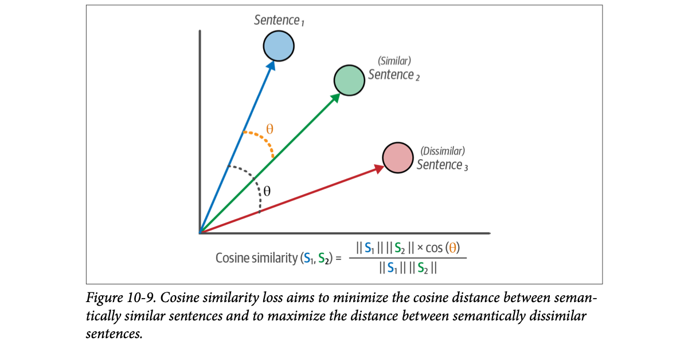
How to read this figure. Each sentence is an arrow from the origin. Sentence1 (blue) and the similar Sentence2 (green) are separated by a small orange angle θ; the dissimilar Sentence3 (red) is at a much larger grey angle. Below, the formula: cosine similarity(S1, S2) = (‖S1‖‖S2‖ × cos θ) / (‖S1‖‖S2‖). The lengths cancel, so it is just cos θ: only the direction of the arrows matters. Small angle → close to 1; right angle → 0. (The numerator is the dot product S1·S2 written in its geometric form.)
The loss is straightforward: compute the cosine similarity of the two embeddings and compare it with the labeled similarity score. The model learns to recognise the degree of similarity between sentences.
Beyond the book: in sentence-transformers, CosineSimilarityLoss uses the squared error between cos(u, v) and the label by default; the book only says "compares". Arrows are 2D for display.
This loss works best with pairs labeled 0…1. To use it with NLI, the three labels must be converted. Entailment means high similarity, so it gets 1. Neutral and contradiction both represent dissimilarity, so both get 0:
from datasets import Dataset, load_dataset
# Load MNLI dataset from GLUE
# 0 = entailment, 1 = neutral, 2 = contradiction
train_dataset = load_dataset(
"glue", "mnli", split="train"
).select(range(50_000))
train_dataset = train_dataset.remove_columns("idx")
# (neutral/contradiction)=0 and (entailment)=1
mapping = {2: 0, 1: 0, 0:1}
train_dataset = Dataset.from_dict({
"sentence1": train_dataset["premise"],
"sentence2": train_dataset["hypothesis"],
"label": [float(mapping[label]) for label in train_dataset["label"]]
})mapping = {2: 0, 1: 0, 0: 1}: contradiction→0, neutral→0, entailment→1.sentence1, sentence2, label, and the label is made a float, because the loss compares it to a real-valued cosine.The evaluator is the same STSB EmbeddingSimilarityEvaluator as before. Training is identical except for two lines: a fresh bert-base-uncased and a different loss.
# Define model
embedding_model = SentenceTransformer("bert-base-uncased")
# Loss function
train_loss = losses.CosineSimilarityLoss(model=embedding_model)
# Define the training arguments
args = SentenceTransformerTrainingArguments(
output_dir="cosineloss_embedding_model",
num_train_epochs=1, per_device_train_batch_size=32, per_device_eval_batch_size=32,
warmup_steps=100, fp16=True, eval_steps=100, logging_steps=100,
)
# Train model
trainer = SentenceTransformerTrainer(model=embedding_model, args=args,
train_dataset=train_dataset, loss=train_loss, evaluator=evaluator)
trainer.train()
evaluator(embedding_model)
{'pearson_cosine': 0.7222322163831805,
'spearman_cosine': 0.7250508271229599,
'pearson_manhattan': 0.7338163436711481, 'spearman_manhattan': 0.7323479193408869,
'pearson_euclidean': 0.7332716434966307, 'spearman_euclidean': 0.7316999722750905,
'pearson_dot': 0.660366792336156, 'spearman_dot': 0.6624167554844425,
'pearson_max': 0.7338163436711481, 'spearman_max': 0.7323479193408869}(Arguments compacted onto fewer lines; values are exactly the book's.)
A Pearson cosine of 0.72 is a big improvement over softmax loss (0.59), showing how much the loss function alone affects performance. Same data, same base model, same settings. Then: restart the notebook before the next, "more common and performant" loss.
Labels after mapping: (premise, entailment) → 1, (premise, neutral) → 0, (premise, contradiction) → 0. Suppose current cosines are 0.55, 0.60, 0.20 (modelled). Squared errors: (1−0.55)² = 0.20, (0−0.60)² = 0.36, (0−0.20)² = 0.04. The neutral pair is the biggest error, so most of this step's update pushes that pair apart, and the entailment pair together. After many steps, entailments drift to high cosine and the rest to low.
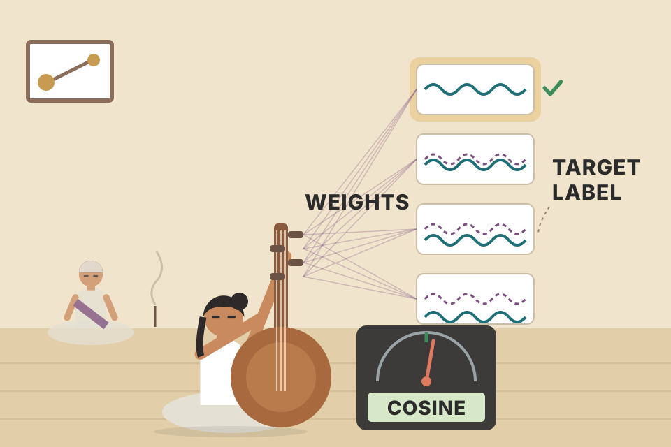
Tuning a tanpura: each string (pair) has a target pitch (label). You keep turning the peg (weights) until what you hear (cosine) matches the target. Where it breaks: all strings share the same pegs here, so fixing one pair moves all the others a little too.
Softmax loss trained a side classifier; cosine loss trains the very quantity you will use at query time, cos(u, v). Training and usage now line up, which is why scores jump. Its weakness is the labels: mapping neutral and contradiction both to 0 is coarse, and a regression target treats "0.6" pairs as precise when humans are noisy.
Q: "Why cosine and not Euclidean distance?" Cosine looks only at direction, so it ignores vector length, which often reflects things like text length rather than meaning. For normalised vectors cosine, dot product and Euclidean give the same ranking anyway. Cosine similarity loss directly trains that score to match labeled similarity.
Multiple negatives ranking (MNR) loss (footnote 6: Henderson et al., 2017), often called InfoNCE (footnote 7: van den Oord et al., 2018) or NTXentLoss (footnote 8: Chen et al., SimCLR, 2020), uses either positive pairs of sentences, or triplets: a positive pair plus an extra unrelated sentence. That unrelated sentence is called a negative; it represents dissimilarity from the positive sentences.
Typical positive pairs: question/answer, image/image caption, paper title/paper abstract. The great thing about these pairs is that we can be confident they are hard positive pairs (they truly belong together).
In MNR loss, negative pairs are constructed by mixing a positive pair with another positive pair. For paper titles and abstracts, a negative pair is a title combined with a completely different paper's abstract. These are called in-batch negatives, and they can also be used to build the triplets.
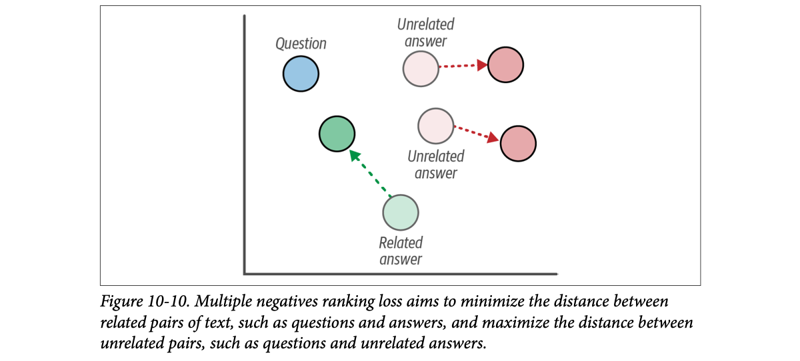
How to read this figure. A 2D embedding space. The blue dot is the question. Faded circles show where answers start; solid circles show where training moves them. The related answer (green) moves up towards the question (green dashed arrow). The two unrelated answers (red) move away to the right (red dashed arrows). One loss does both pulls and pushes at the same time.
Once the positive and negative pairs exist, compute their embeddings and apply cosine similarity. The scores answer "is this pair positive or negative?". In other words, it is treated as a classification task and optimised with cross-entropy loss.
Rows are questions (anchors), columns are answers in the same batch. The green-outlined diagonal is each question's true answer; everything else in its row is an in-batch negative. MNR applies softmax across each row and asks for the diagonal to win.
All similarities are modelled (random, then pulled towards a trained pattern as progress rises). Beyond the book: sentence-transformers multiplies cosines by a scale (default 20) before the softmax; the simulator does the same.
Start with an anchor sentence (the "premise"). From MNLI keep only entailment pairs (the hypothesis becomes the positive). For the negative, randomly sample a hypothesis from another row.
import random
from tqdm import tqdm
from datasets import Dataset, load_dataset
# # Load MNLI dataset from GLUE
mnli = load_dataset("glue", "mnli", split="train").select(range(50_000))
mnli = mnli.remove_columns("idx")
mnli = mnli.filter(lambda x: True if x["label"] == 0 else False)
# Prepare data and add a soft negative
train_dataset = {"anchor": [], "positive": [], "negative": []}
soft_negatives = mnli["hypothesis"]
random.shuffle(soft_negatives)
for row, soft_negative in tqdm(zip(mnli, soft_negatives)):
train_dataset["anchor"].append(row["premise"])
train_dataset["positive"].append(row["hypothesis"])
train_dataset["negative"].append(soft_negative)
train_dataset = Dataset.from_dict(train_dataset)filter(... label == 0): keep only entailments. Rows drop from 50,000 to 16,875.soft_negatives: all hypotheses, shuffled, so each anchor gets some random other row's hypothesis as a "soft" (easy) negative.anchor / positive / negative are the triplet format MNR expects. Inside a batch, every other row's positive (and negative) also acts as an extra negative for free.# Define model
embedding_model = SentenceTransformer('bert-base-uncased')
# Loss function
train_loss = losses.MultipleNegativesRankingLoss(model=embedding_model)
args = SentenceTransformerTrainingArguments(output_dir="mnrloss_embedding_model", ...) # same values as before
trainer = SentenceTransformerTrainer(model=embedding_model, args=args,
train_dataset=train_dataset, loss=train_loss, evaluator=evaluator)
trainer.train()
evaluator(embedding_model)
{'pearson_cosine': 0.8093892326162132,
'spearman_cosine': 0.8121064796503025,
'pearson_manhattan': 0.8215001523827565, 'spearman_manhattan': 0.8172161486524246,
'pearson_euclidean': 0.8210391407846718, 'spearman_euclidean': 0.8166537141010816,
'pearson_dot': 0.7473360302629125, 'spearman_dot': 0.7345184137194012,
'pearson_max': 0.8215001523827565, 'spearman_max': 0.8172161486524246}("..." stands for the same arguments as plate 8: 1 epoch, batch 32, warmup 100, fp16, eval/logging every 100 steps. The book prints them in full.)
The book: "Compared to our previously trained model with softmax loss (0.72), our model with MNR loss (0.80) seems to be much more accurate!" The model scores about 0.81, with only a third of the rows (16,875 entailment triplets instead of 50,000 pairs).
The 0.72 it compares against was the cosine similarity loss run; the softmax run scored 0.59. And the printed output is 0.809, which the text rounds down to 0.80.
A school sports day "find your partner" game: 32 children each hold half of a torn card. Each child must pick their partner out of the whole group. With 4 children it's easy by luck; with 32 you really have to look at the tear. Where it breaks: the other children were picked at random, so most are obviously wrong (different colour card). That is the "easy negatives" problem of the next plate.
For a batch of B (anchor, positive) pairs, the loss builds a B × B matrix of cosine similarities and runs a B-way softmax per row, with cross-entropy whose correct class is the diagonal. Every other positive in the batch is a free negative, so one batch of 32 gives each anchor 31 negatives (plus explicit ones from triplets) without extra labeling. Positive pairs are all it needs, which is why question/answer logs and title/body pairs are such good training data.
Q: "What loss would you use to fine-tune a retriever on (query, relevant chunk) pairs?" Multiple negatives ranking loss, also called InfoNCE: it only needs positive pairs and uses the rest of the batch as negatives, so I use the largest batch my GPU fits. Then I add mined hard negatives to make it learn finer distinctions.
There is a downside to how MNR was used. The negatives were sampled from other pairs, so these in-batch or "easy" negatives may be completely unrelated to the question. That makes the model's job of finding the right answer quite easy.
We would rather have negatives that are very related to the question but not the right answer: hard negatives. They make the task harder, the model must learn more nuanced representations, and its performance generally improves quite a bit.
The book's example. Question: "How many people live in Amsterdam?" Correct answer: "Almost a million people live in Amsterdam." A good hard negative talks about Amsterdam and about how many people live in a city, but doesn't answer: "More than a million people live in Utrecht, which is more than Amsterdam."
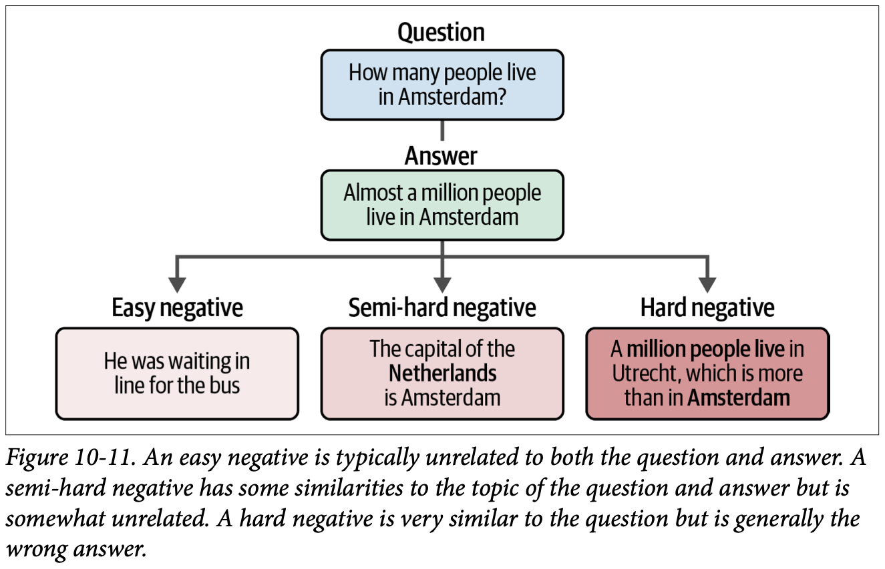
How to read this figure. Top: the question and its correct answer. Below, three negatives, getting darker red as they get harder. Easy: "He was waiting in line for the bus" (nothing in common). Semi-hard: "The capital of the Netherlands is Amsterdam" (same topic, Amsterdam, but not about population). Hard: "A million people live in Utrecht, which is more than in Amsterdam" (bold words overlap with the question and answer, yet it's the wrong answer). (The figure's wording differs slightly from the text's "More than a million…".)
Gathering negatives roughly falls into three processes:
Sentences are the book's (Figure 10-11). The cosine values and the softmax probabilities are modelled for a half-trained model, to show why hard negatives give a bigger learning signal.
Then, as usual: restart the notebook before the fine-tuning section.
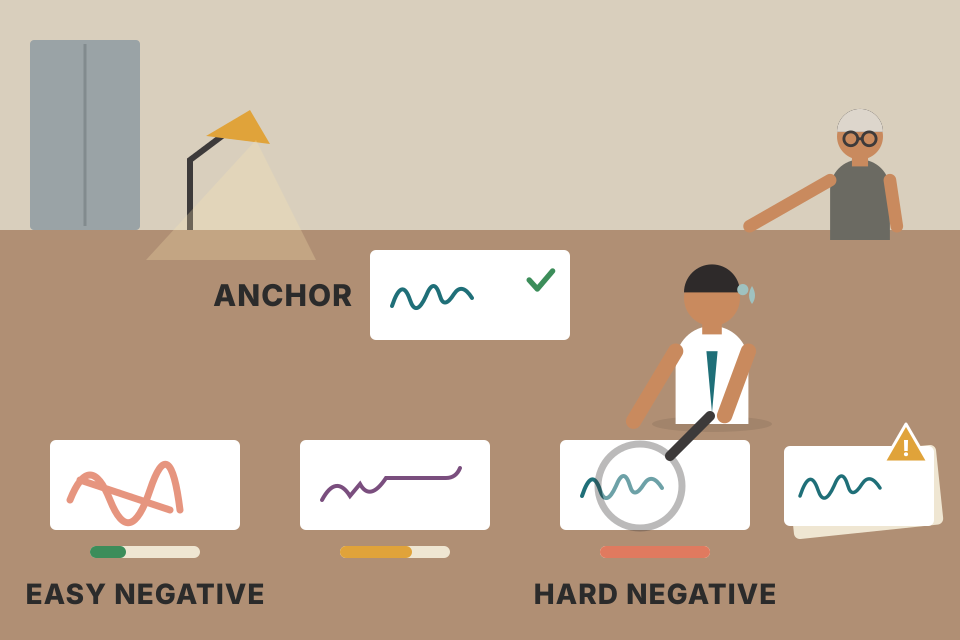
Training a bank's fraud checker on fake signatures. A child's scribble (easy negative) teaches nothing; a different person's neat signature (semi-hard) teaches a bit; a skilled forgery of this customer's signature (hard negative) teaches the details that matter. Where it breaks: if your "forgery" is actually genuine (a mislabeled hard negative, i.e. a real answer), you teach the model to reject correct matches. Hard negatives must be checked.
Under softmax cross-entropy, a negative that already has a very low similarity gets almost zero probability and contributes almost no gradient. A hard negative sits close to the anchor, takes a big share of the probability, and so produces a large gradient that forces the model to find the subtle difference (population of Amsterdam, not Utrecht). That's why the same number of training rows with hard negatives teaches more.
Q: "How do you mine hard negatives for a RAG retriever?" Run the current retriever or BM25, take high-ranked chunks that are not the labeled answer, and optionally filter with a cross-encoder or an LLM judge to drop false negatives that actually answer the query. Mix them with in-batch negatives in MNR loss.
The false-negative filter is the part interviewers like to hear.
The previous section trained an embedding model from scratch (from plain BERT) and used loss functions to optimise it. Powerful, but creating an embedding model from scratch is costly and time-consuming.
Instead, sentence-transformers lets nearly all embedding models serve as a base for fine-tuning. You pick a model already trained on a large amount of data and fine-tune it for your specific data or purpose.
There are several ways to fine-tune, depending on data availability and domain. The book shows two: supervised fine-tuning (plate 15) and Augmented SBERT (plate 16), then goes fully unsupervised (plates 17–19).
A decision helper built from the chapter's advice; the thresholds are rough, not the book's.
Training from scratch is raising a cook from childhood; fine-tuning is hiring an experienced cook and teaching them your restaurant's menu in a week. Where it breaks: an experienced cook may have habits (a pretrained notion of similarity) that clash with yours; fine-tuning has to overwrite them with enough examples.
The most straightforward way: repeat the training process exactly, but replace 'bert-base-uncased' with a pretrained sentence-transformers model. Many exist; all-MiniLM-L6-v2 generally performs well across many use cases and, being small, is fast.
The data is the same as in the MNR example. Load it and the STSB evaluator as always:
from datasets import load_dataset
from sentence_transformers.evaluation import EmbeddingSimilarityEvaluator
# Load MNLI dataset from GLUE
# 0 = entailment, 1 = neutral, 2 = contradiction
train_dataset = load_dataset(
"glue", "mnli", split="train"
).select(range(50_000))
train_dataset = train_dataset.remove_columns("idx")
# Create an embedding similarity evaluator for stsb
val_sts = load_dataset("glue", "stsb", split="validation")
evaluator = EmbeddingSimilarityEvaluator(
sentences1=val_sts["sentence1"], sentences2=val_sts["sentence2"],
scores=[score/5 for score in val_sts["label"]], main_similarity="cosine"
)# Define model
embedding_model = SentenceTransformer('sentence-transformers/all-MiniLM-L6-v2')
# Loss function
train_loss = losses.MultipleNegativesRankingLoss(model=embedding_model)
args = SentenceTransformerTrainingArguments(output_dir="finetuned_embedding_model", ...) # same values
trainer = SentenceTransformerTrainer(model=embedding_model, args=args,
train_dataset=train_dataset, loss=train_loss, evaluator=evaluator)
trainer.train()
evaluator(embedding_model)
{'pearson_cosine': 0.8509553350510896,
'spearman_cosine': 0.8484676559567688,
'pearson_manhattan': 0.8503896832470704, 'spearman_manhattan': 0.8475760325664419,
'pearson_euclidean': 0.8513115442079158, 'spearman_euclidean': 0.8484676559567688,
'pearson_dot': 0.8489553386816947, 'spearman_dot': 0.8484676559567688,
'pearson_max': 0.8513115442079158, 'spearman_max': 0.8484676559567688}pearson_dot (0.849) is now almost equal to pearson_cosine. Beyond the book: all-MiniLM-L6-v2 outputs normalised vectors, so dot product and cosine coincide; in the from-scratch BERT runs, dot was clearly worse.train_dataset is the raw MNLI with premise/hypothesis/label columns, as the book prints it; the text says it is "the same data as … the MNR loss example".0.85 is the highest score so far. But the book is honest: the pretrained model was already trained on the full MNLI dataset, whereas we only used 50,000 examples. It may seem redundant; the example's point is to show how to fine-tune a pretrained embedding model on your own data.
The main difficulty of training or fine-tuning is finding the right data. You want very large datasets, and the data must be high quality. Making positive pairs is generally straightforward; adding hard negative pairs makes building quality data significantly harder.
Restart the notebook to free VRAM.
A support-bot team has 8,000 resolved tickets. Positive pairs: (customer question, the help-centre article the agent linked). In-batch negatives come free from MNR. For hard negatives they take the article ranked #2 by the current retriever when it isn't the linked one. Starting from all-MiniLM-L6-v2 with MNR, this is exactly the plate 15 recipe with their own anchor/positive/negative columns. (Scenario modelled.)
A trained Carnatic singer learning a new composition: they already have the voice (pretrained embeddings), they just need to practise this piece. A beginner (bert-base-uncased) needs voice training first. Where it breaks: the "new composition" here (MNLI) was one the singer had already performed, so the high score partly reflects memory.
A pretrained sentence-transformer already maps paraphrases close together, so fine-tuning only has to nudge the space towards your pairs instead of building it from nothing. That needs far fewer examples and steps. The risk is the opposite: if your data is narrow, heavy fine-tuning can make the model forget general similarity (beyond the book: often called catastrophic forgetting).
Q: "Your fine-tuned embedder scores 0.85, much better than baseline. Do you ship?" First I check for leakage: was the base model already trained on that benchmark or my test data? Here all-MiniLM-L6-v2 had seen full MNLI. Then I evaluate on held-out data from my real queries and check general benchmarks didn't drop.
A disadvantage of training or fine-tuning embedding models: they need a lot of training data. Many are trained on more than a billion sentence pairs. For most use cases you can't extract that many; often only a couple of thousand labeled data points exist.
Luckily you can augment the data so a model can be fine-tuned with little labeled data. This is Augmented SBERT (footnote 9: Thakur et al., 2020). It uses the slow but more accurate cross-encoder (BERT) to label a larger set of input pairs, and those newly labeled pairs are then used to fine-tune a bi-encoder (SBERT). The four steps:
A gold dataset is small but fully annotated and holds the ground truth. A silver dataset is also fully annotated, but not necessarily ground truth, because its labels are the cross-encoder's predictions.
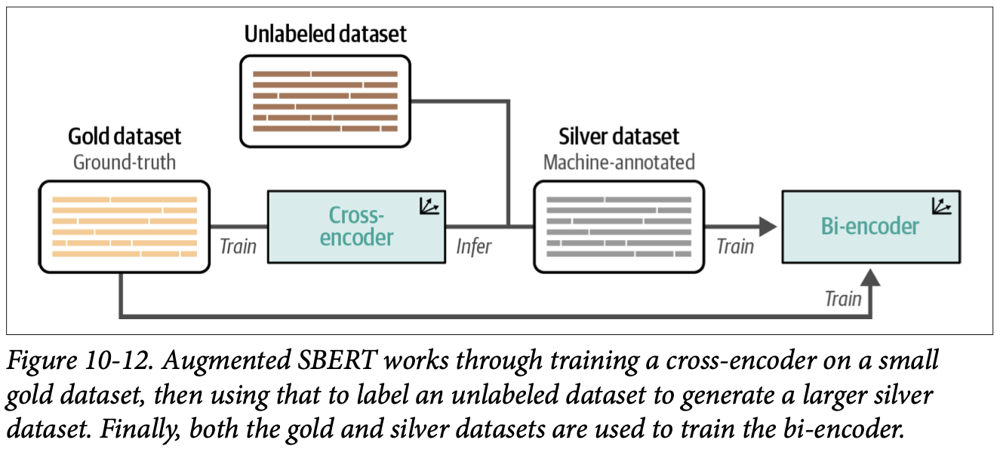
How to read this figure. Follow the arrows left to right. The orange Gold dataset (ground-truth) → "Train" → Cross-encoder. The cross-encoder then runs "Infer" on the brown Unlabeled dataset (top), producing the grey Silver dataset (machine-annotated). Silver → "Train" → Bi-encoder. The long line along the bottom shows the gold data also going into the bi-encoder's training. The slow, accurate model is a teacher; the fast model is the student that gets deployed.
To simulate limited labels, take 10,000 pairs instead of 50,000. As with cosine loss: entailment → 1, neutral and contradiction → 0.
import pandas as pd
from tqdm import tqdm
from datasets import load_dataset, Dataset
from sentence_transformers import InputExample
from sentence_transformers.datasets import NoDuplicatesDataLoader
# Prepare a small set of 10000 documents for the cross-encoder
dataset = load_dataset("glue", "mnli", split="train").select(range(10_000))
mapping = {2: 0, 1: 0, 0:1}
# Data loader
gold_examples = [
InputExample(texts=[row["premise"], row["hypothesis"]], label=mapping[row["label"]])
for row in tqdm(dataset)
]
gold_dataloader = NoDuplicatesDataLoader(gold_examples, batch_size=32)
# Pandas DataFrame for easier data handling
gold = pd.DataFrame(
{
"sentence1": dataset["premise"],
"sentence2": dataset["hypothesis"],
"label": [mapping[label] for label in dataset["label"]]
}
)InputExample(texts=[a, b], label=...): the older sentence-transformers format the CrossEncoder.fit API expects.NoDuplicatesDataLoader: a data loader that avoids putting the same sentence twice in a batch (beyond the book, from the class name/library docs).gold DataFrame: the same 10,000 pairs kept as a table so they can be concatenated with silver later. This is the gold dataset: labeled ground truth.from sentence_transformers.cross_encoder import CrossEncoder
# Train a cross-encoder on the gold dataset
cross_encoder = CrossEncoder("bert-base-uncased", num_labels=2)
cross_encoder.fit(
train_dataloader=gold_dataloader,
epochs=1,
show_progress_bar=True,
warmup_steps=100,
use_amp=False
)num_labels=2: the cross-encoder classifies a pair as 0 (not similar) or 1 (similar).use_amp=False: no automatic mixed precision for this run.# Prepare the silver dataset by predicting labels with the cross-encoder
silver = load_dataset(
"glue", "mnli", split="train"
).select(range(10_000, 50_000))
pairs = list(zip(silver["premise"], silver["hypothesis"]))The book says this uses "the remaining 400,000 sentence pairs (from our original dataset of 50,000 sentence pairs)".
range(10_000, 50_000) is 40,000 pairs, not 400,000. The total is 10,000 gold + 40,000 silver = the original 50,000.
import numpy as np
# Label the sentence pairs using our fine-tuned cross-encoder
output = cross_encoder.predict(
pairs, apply_softmax=True,
show_progress_bar=True
)
silver = pd.DataFrame(
{
"sentence1": silver["premise"],
"sentence2": silver["hypothesis"],
"label": np.argmax(output, axis=1)
}
)predict(..., apply_softmax=True): gives probabilities for the 2 classes per pair; np.argmax(..., axis=1) takes the more likely class (0 or 1) as the silver label.# Combine gold + silver
data = pd.concat([gold, silver], ignore_index=True, axis=0)
data = data.drop_duplicates(subset=["sentence1", "sentence2"], keep="first")
train_dataset = Dataset.from_pandas(data, preserve_index=False)
# Define model
embedding_model = SentenceTransformer("bert-base-uncased")
# Loss function
train_loss = losses.CosineSimilarityLoss(model=embedding_model)
args = SentenceTransformerTrainingArguments(output_dir="augmented_embedding_model", ...) # same values
trainer = SentenceTransformerTrainer(model=embedding_model, args=args,
train_dataset=train_dataset, loss=train_loss, evaluator=evaluator)
trainer.train()
evaluator(embedding_model)
{'pearson_cosine': 0.7101597020018693,
'spearman_cosine': 0.7210536464320728,
'pearson_manhattan': 0.7296749443525249, 'spearman_manhattan': 0.7284184255293913,
'pearson_euclidean': 0.7293097297208753, 'spearman_euclidean': 0.7282830906742256,
'pearson_dot': 0.6746605824703588, 'spearman_dot': 0.6754486790570754,
'pearson_max': 0.7296749443525249, 'spearman_max': 0.7284184255293913}drop_duplicates: if a pair appears in both gold and silver, keep the first (gold) copy, so ground truth wins.The cosine-loss model trained on the full 50,000 human labels scored 0.72. Using human labels for only 20% of that data (10,000), Augmented SBERT reaches 0.71.
This grows a dataset without manually labeling hundreds of thousands of pairs. To test the quality of your silver data, also train the embedding model on gold only; the performance difference tells you how much the silver data adds.
Then restart the notebook "a final time" for the last example, unsupervised learning.
A senior CA (chartered accountant) carefully checks 100 invoices (gold). Then she trains a junior; the junior pre-checks 400 more, and the senior's habits are copied into a fast checklist used at every branch (bi-encoder). Where it breaks: the junior's mistakes become part of the checklist; silver labels carry the teacher's errors, so they're only as good as the cross-encoder.
A cross-encoder learns from fewer labels because it sees both sentences together and can compare words directly. Its knowledge is "distilled" into the bi-encoder through the silver labels. The bi-encoder sees 5× more pairs than it would from gold alone. It's a form of knowledge distillation / pseudo-labeling (beyond the book's terms): a strong-but-slow teacher creates training data for a fast student.
Q: "You have 2,000 labeled query–document pairs and millions of unlabeled ones. How do you train a good retriever?" Train a cross-encoder on the 2,000, generate candidate pairs by retrieving top-k with an off-the-shelf embedder, label them with the cross-encoder, and train the bi-encoder on gold plus silver. Compare against a gold-only model to prove the silver data helps. Today an LLM judge can also serve as the labeler.
Creating an embedding model usually needs labeled data, but many real-world datasets have no labels. So we look for techniques that train without predetermined labels: unsupervised learning. Many approaches exist:
The book focuses on TSDAE, because it has shown great performance on unsupervised tasks and on domain adaptation.
The book only names them. In short: SimCSE encodes the same sentence twice with different dropout and treats the two outputs as a positive pair; CT trains two models to give high dot products for identical sentences and low for different ones; GPL uses a generator to write queries for passages and a cross-encoder to pseudo-label them (close to Augmented SBERT).
Learning a language with no teacher and no answer key, only a pile of newspapers. You can still get good by covering words and guessing them. Where it breaks: you learn what the newspapers talk about, not the specific task your boss needs, which is why unsupervised models usually trail supervised ones.
TSDAE is an elegant unsupervised approach. It assumes no labeled data at all and doesn't require creating labels artificially.
The idea: add noise to the input sentence by removing a certain percentage of its words. This "damaged" sentence goes through an encoder with a pooling layer on top, giving a sentence embedding. From that embedding alone, a decoder tries to reconstruct the original sentence without the noise. The key concept: the more accurate the sentence embedding, the more accurate the reconstruction.
This is very similar to masked language modeling, where certain masked words are reconstructed. Here, instead of reconstructing masked words, we reconstruct the entire sentence.
After training, you use only the encoder to make embeddings. The decoder exists only to judge whether the embeddings can reconstruct the original (Figure 10-13).
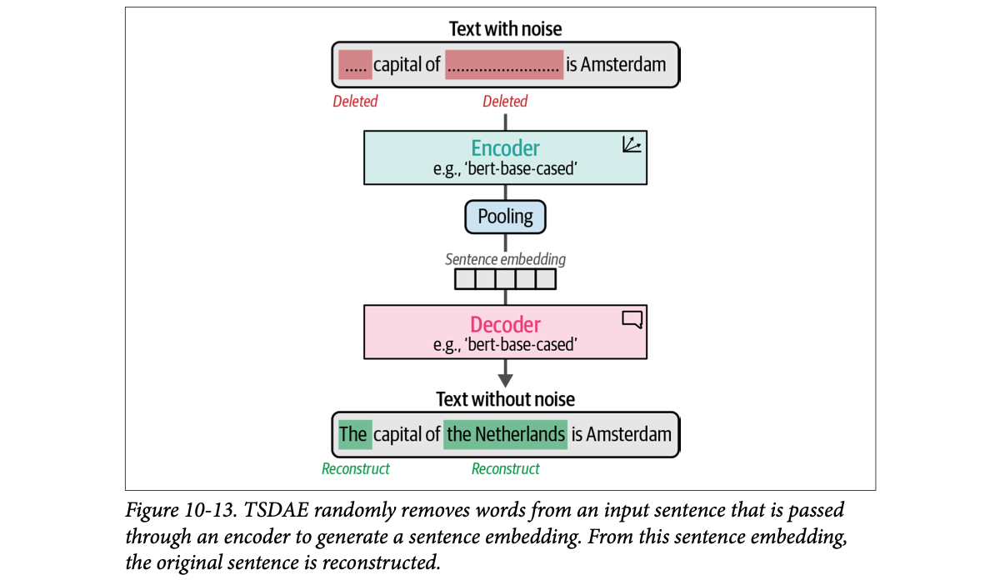
How to read this figure. Top: "Text with noise": "..... capital of .......... is Amsterdam", two red blocks marked "Deleted". It flows down through the Encoder (labelled e.g. 'bert-base-cased'), Pooling, to a small sentence embedding. The Decoder (also e.g. 'bert-base-cased', with a speech-bubble icon for "generates text") outputs "Text without noise": "The capital of the Netherlands is Amsterdam", the green words marked "Reconstruct". Everything the decoder knows about the sentence must squeeze through that one small vector, so the vector is forced to carry the meaning. (The figure says 'bert-base-cased'; the code uses 'bert-base-uncased'. "e.g." means any encoder works.)
The book only says "a certain percentage" of words is removed. Beyond the book: sentence-transformers' DenoisingAutoEncoderDataset deletes about 60% by default, which is why the slider starts there. Sentences are from the chapter.
Only unlabeled sentences are needed, so training is straightforward. First download an external tokenizer used by the denoising (word-splitting) procedure:
# Download additional tokenizer
import nltk
nltk.download("punkt")Then make a flat list of sentences and drop all labels, to mimic an unsupervised setting:
from tqdm import tqdm
from datasets import Dataset, load_dataset
from sentence_transformers.datasets import DenoisingAutoEncoderDataset
# Create a flat list of sentences
mnli = load_dataset("glue", "mnli", split="train").select(range(25_000))
flat_sentences = mnli["premise"] + mnli["hypothesis"]
# Add noise to our input data
damaged_data = DenoisingAutoEncoderDataset(list(set(flat_sentences)))
# Create dataset
train_dataset = {"damaged_sentence": [], "original_sentence": []}
for data in tqdm(damaged_data):
train_dataset["damaged_sentence"].append(data.texts[0])
train_dataset["original_sentence"].append(data.texts[1])
train_dataset = Dataset.from_dict(train_dataset)set() removes exact duplicates, so it may be slightly fewer).DenoisingAutoEncoderDataset: for each sentence, returns a pair whose texts[0] is the damaged version and texts[1] the original.train_dataset[0]
{'damaged_sentence': 'Grim jaws are.',
'original_sentence': 'Grim faces and hardened jaws are not people-friendly.'}The first sentence is the "noisy" one, the second the original. (8 words → 3 words kept.) The STSB evaluator is defined as before.
The model is built from two modules, with the [CLS] token as the pooling strategy instead of mean pooling. The TSDAE paper showed this works better, because mean pooling loses position information, which is not the case with the [CLS] token:
from sentence_transformers import models, SentenceTransformer
# Create your embedding model
word_embedding_model = models.Transformer("bert-base-uncased")
pooling_model = models.Pooling(word_embedding_model.get_word_embedding_dimension(), "cls")
embedding_model = SentenceTransformer(modules=[word_embedding_model, pooling_model])models.Transformer(...): the BERT that outputs token embeddings.models.Pooling(dim, "cls"): take the [CLS] token's vector as the sentence embedding.SentenceTransformer(modules=[...]): chain them; this is what SentenceTransformer('bert-base-uncased') did implicitly earlier, but with mean pooling.The loss tries to reconstruct the original sentence from the noisy one: DenoisingAutoEncoderLoss. By doing so the model learns to represent the data accurately. It is similar to masking, but without knowing where the masks are (deleted words leave no placeholder).
The parameters of both models are tied: instead of separate weights for the encoder's embedding layer and the decoder's output layer, they share the same weights. Any update to one is reflected in the other.
from sentence_transformers import losses
# Use the denoising auto-encoder loss
train_loss = losses.DenoisingAutoEncoderLoss(
embedding_model, tie_encoder_decoder=True
)
train_loss.decoder = train_loss.decoder.to("cuda")tie_encoder_decoder=True: share weights as described..decoder.to("cuda"): move the decoder onto the GPU explicitly (it is created inside the loss, not by the trainer).Training is as before, but with the batch size lowered to 16 because memory use increases with this loss:
args = SentenceTransformerTrainingArguments(
output_dir="tsdae_embedding_model",
num_train_epochs=1,
per_device_train_batch_size=16,
per_device_eval_batch_size=16,
warmup_steps=100,
fp16=True,
eval_steps=100,
logging_steps=100,
)
trainer = SentenceTransformerTrainer(model=embedding_model, args=args,
train_dataset=train_dataset, loss=train_loss, evaluator=evaluator)
trainer.train()
evaluator(embedding_model)
{'pearson_cosine': 0.6991809700971775,
'spearman_cosine': 0.713693213167873,
'pearson_manhattan': 0.7152343356643568, 'spearman_manhattan': 0.7201441944880915,
'pearson_euclidean': 0.7151142243297436, 'spearman_euclidean': 0.7202291660769805,
'pearson_dot': 0.5198066451871277, 'spearman_dot': 0.5104025515225046,
'pearson_max': 0.7152343356643568, 'spearman_max': 0.7202291660769805}A score of 0.70, which the book calls quite impressive considering all training used unlabeled data. It beats the supervised softmax baseline (0.59) and nearly matches cosine loss with 50,000 labels (0.72).
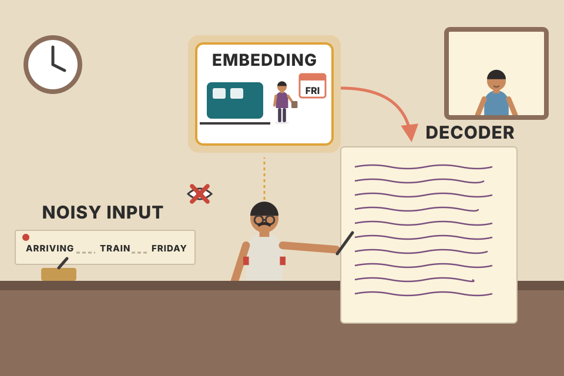
A telegram with half the words missing ("ARRIVING. TRAIN. FRIDAY") and a clerk who must write the full letter back. To do it, the clerk must truly understand what the sender meant, not copy words. The single-line summary the clerk keeps in their head is the embedding. Where it breaks: a clerk can use common sense about the sender; the decoder only has the vector, which is exactly the point.
The decoder can only attend to the sentence embedding (not to the encoder's token outputs), so the embedding is a bottleneck that must hold enough meaning to rebuild the sentence. Deleting words (instead of masking them) means the encoder can't just copy visible tokens; it must model what the sentence is about. Tying the encoder's input embeddings to the decoder's output layer halves those parameters and keeps the two sides speaking the same vocabulary space.
Q: "You have a large corpus of internal documents and no labels. Can you still improve embeddings?" Yes: unsupervised objectives like TSDAE, which deletes words and trains an encoder whose single sentence vector lets a decoder rebuild the sentence. It needs only raw sentences. It usually trails supervised training, so the best use is as a domain-adaptation step before fine-tuning on whatever pairs I have.
With little or no labeled data, you typically use unsupervised learning. But unsupervised techniques are generally outperformed by supervised ones and struggle to learn domain-specific concepts.
That's where domain adaptation comes in: updating an existing embedding model to a specific textual domain whose subjects differ from the source domain. The target domain, or out-domain, generally contains words and subjects not found in the source domain, or in-domain.
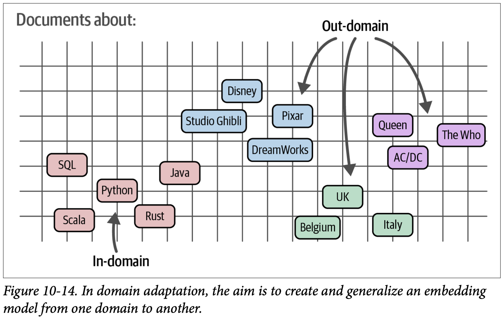
How to read this figure. "Documents about:" placed in an embedding space. Bottom left, pink, labelled In-domain: programming languages (SQL, Python, Scala, Rust, Java), what the model was trained on. The arrows from Out-domain point at three other clusters: animation studios (Disney, Pixar, Studio Ghibli, DreamWorks), rock bands (Queen, The Who, AC/DC) and countries (UK, Belgium, Italy). The question domain adaptation answers: can a model that learned the programming cluster also lay out these new subjects sensibly?
One method is adaptive pretraining. First pretrain on your domain-specific corpus using an unsupervised technique such as TSDAE or masked language modeling. Then (Figure 10-15) fine-tune that model with a training dataset that can be outside or inside your target domain. Target-domain data is preferred, but out-domain data also works, because the unsupervised step already happened on the target domain.
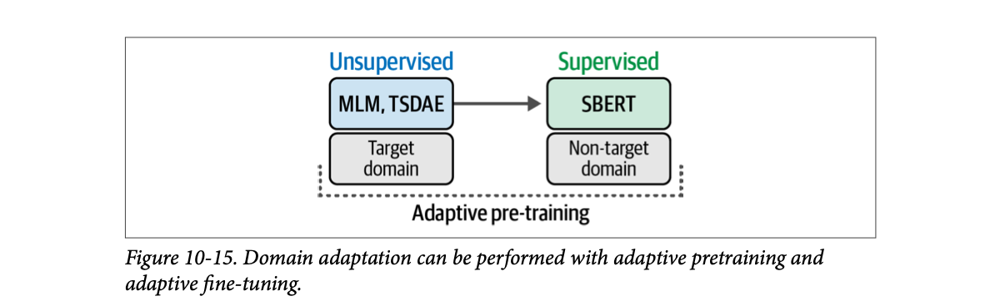
How to read this figure. Left, blue, Unsupervised: "MLM, TSDAE" run on the target domain. Arrow right to green, Supervised: "SBERT" training on a non-target domain (for example general labeled pairs like MNLI). A dotted bracket under both is labelled Adaptive pre-training. Read it as: learn the vocabulary of your domain without labels, then learn the skill of similarity from whatever labeled pairs exist.
Steps follow the book's closing paragraph; the legal-contracts scenario is modelled.
The book's closing challenge: using everything in this chapter, you can reproduce this pipeline. Start with TSDAE to train an embedding model on your target domain, then fine-tune it with either general supervised training or Augmented SBERT.
A doctor from Chennai posted to a hospital in rural Punjab. First she listens to patients for weeks to pick up local words for symptoms (unsupervised, target domain). Her medical training (supervised, done elsewhere) still applies; now it works on the local words too. Where it breaks: if the new place has truly new diseases, listening alone won't teach the diagnosis; you'd still want some labeled target-domain cases.
A general model may split your jargon into meaningless word pieces or map distinct domain terms to the same vague region. The unsupervised step reshapes the encoder's representations around your corpus's vocabulary and co-occurrences. The supervised step then teaches "what counts as similar" on top of representations that already understand your words.
Q: "Retrieval quality is poor on our legal / medical / internal docs. What do you try?" Check whether the embedder knows the vocabulary. If not: domain adaptation. Run TSDAE or MLM on our own corpus, then fine-tune with MNR on whatever pairs we can get: real query logs, LLM-generated questions per chunk, or Augmented SBERT silver labels. Measure recall@k on held-out real queries before and after.
| Run | Base model | Data | Loss | pearson_cosine |
|---|---|---|---|---|
| Train from scratch | bert-base-uncased | 50,000 MNLI pairs, 3 labels | SoftmaxLoss | 0.598 |
| Better loss | bert-base-uncased | 50,000 pairs, labels 0/1 | CosineSimilarityLoss | 0.722 |
| Best loss | bert-base-uncased | 16,875 (anchor, positive, soft negative) | MultipleNegativesRankingLoss | 0.809 |
| Supervised fine-tune | all-MiniLM-L6-v2 | 50,000 MNLI rows | MNR | 0.851 |
| Augmented SBERT | bert-base-uncased (+ cross-encoder teacher) | 10,000 gold + 40,000 silver | CosineSimilarityLoss | 0.710 |
| TSDAE | bert-base-uncased, [CLS] pooling | ~50,000 unlabeled sentences | DenoisingAutoEncoderLoss | 0.699 |
| Term | Meaning |
|---|---|
| Embedding / embedding model | A numeric vector for a piece of text / the model (usually an LLM) that produces it. |
| Semantic similarity | Texts with similar meaning get nearby vectors. |
| Contrastive learning | Training with similar and dissimilar examples so similar ones move closer and dissimilar ones apart. |
| Contrastive explanation | Explaining "why P?" by contrast with an alternative: "why P and not Q?". |
| Cross-encoder | Feeds both texts together into one Transformer with a classification head; outputs a similarity score, no embeddings; accurate but n² cost. |
| Bi-encoder / SBERT / Siamese network | Same-weight encoder applied to each text separately, mean pooling into fixed-size embeddings compared by similarity. |
| Mean pooling / [CLS] pooling | Averaging token embeddings into one vector / using the special [CLS] token's vector instead. |
| NLI (entailment, neutral, contradiction) | Natural language inference: does a premise imply, contradict, or neither, a hypothesis? |
| GLUE, MNLI | Benchmark with 9 language tasks; its 392,702-pair multi-genre NLI corpus. |
| STSB | Semantic Textual Similarity Benchmark: human similarity scores 1–5 for sentence pairs. |
| MTEB | Massive Text Embedding Benchmark: 8 tasks, 58 datasets, 112 languages, with a leaderboard. |
| Softmax loss | Classify (u, v, |u−v|) into labels; the original SBERT loss; not advised today. |
| Cosine similarity loss | Make cos(u, v) match a 0–1 similarity label. |
| MNR loss (InfoNCE, NTXentLoss) | For each anchor, pick its positive among all candidates in the batch; cross-entropy over cosine scores. |
| In-batch / easy / semi-hard / hard negatives | Negatives from other pairs in the batch / random / same topic but unrelated / very similar but wrong. |
| MarginMSE | A loss the book recommends for training cross-encoders. |
| warmup_steps, fp16 | Linear learning-rate ramp from zero; mixed-precision (16-bit) training. |
| Gold / silver dataset | Human-labeled ground truth / labels predicted by a model (cross-encoder). |
| Augmented SBERT | Train a cross-encoder on gold, label new pairs as silver, train the bi-encoder on gold + silver. |
| TSDAE | Delete words, encode to one vector, decode the original sentence; unsupervised. |
| Tied weights | Encoder embedding layer and decoder output layer share parameters. |
| Domain adaptation, in-domain / out-domain | Moving a model from its source subjects to a target domain with new words and topics. |
| Adaptive pretraining | Unsupervised training (TSDAE or MLM) on the target domain, then supervised fine-tuning. |
| VRAM | GPU memory; cleared by restarting the notebook between runs. |
| Name | What it does in this chapter |
|---|---|
sentence-transformers (SBERT) | The framework used throughout: SentenceTransformer, losses.* (Softmax, CosineSimilarity, MultipleNegativesRanking, DenoisingAutoEncoder, MarginMSE mentioned), SentenceTransformerTrainer / TrainingArguments, EmbeddingSimilarityEvaluator, CrossEncoder, models.Transformer/Pooling, DenoisingAutoEncoderDataset, NoDuplicatesDataLoader. |
Hugging Face datasets | load_dataset("glue", "mnli") and ("glue", "stsb"); Dataset.from_dict / from_pandas. |
BERT (bert-base-uncased) | Base model for training from scratch, the cross-encoder in Augmented SBERT, and TSDAE. |
microsoft/mpnet-base | Named as a base model that often gives good results. |
all-MiniLM-L6-v2 | Small, fast pretrained sentence-transformer used for supervised fine-tuning (0.85). |
all-mpnet-base-v2 | Mentioned as a possibly out-of-domain pretrained embedding model. |
| GloVe | Averaged GloVe word vectors beat naive BERT sentence embeddings. |
| word2vec | Early contrastive learning: neighbouring words vs random words. |
| GLUE / MNLI / STSB | Training data (MNLI) and quick evaluation (STSB). |
mteb (MTEB leaderboard) | Full benchmark across 8 tasks, 58 datasets, 112 languages; Banking77Classification shown. |
NLTK (punkt) | Tokenizer downloaded for TSDAE's word-deletion noise. |
| pandas, NumPy, tqdm | Data handling for gold/silver sets, argmax of cross-encoder outputs, progress bars. |
| ChatGPT | Mentioned as a generation model given "memory" via embeddings. |
Vector databases (Qdrant, pgvector, Pinecone, etc.) store bi-encoder embeddings; rerankers such as cross-encoder models sit after retrieval; hosted embedding APIs (OpenAI, Cohere, Voyage) are trained with contrastive objectives and hard negatives; sentence-transformers v3+ is the library version whose trainer API the chapter uses.
They come from models trained for different notions of similarity: 10-2 groups by meaning/topic (vacuum, skin care, delivery), 10-3 by sentiment (positive vs negative). What counts as "similar" is decided by the training examples.
Explaining "why P?" against an alternative, "why P and not Q?". Comparing horse with zebra cancels shared features (four legs, tail, fur, gallops) and reveals distinctive ones (long manes, ear length, no stripes). Contrastive training does the same: pairs show the model which features separate concepts.
n·(n−1)/2 = 49,995,000 cross-encoder passes. A bi-encoder needs 10,000 passes (one per sentence) plus cheap vector comparisons.
The book notes this was shown to be worse than simply averaging GloVe word vectors. Plain BERT wasn't trained to make sentence vectors comparable; SBERT fine-tunes it contrastively in a Siamese setup.
The concatenation (u, v, |u − v|): both sentence embeddings and their element-wise absolute difference.
Entailment → 1, neutral → 0, contradiction → 0. The difference between "unrelated" (neutral) and "opposite" (contradiction) is lost.
Cosine loss optimises the very quantity used at evaluation and inference time (cosine similarity), while softmax loss trains a side classifier on (u, v, |u−v|) whose decisions don't directly shape cosine distances.
In-batch negatives: every other pair's positive in the same batch is treated as a negative for this anchor. It's then a classification (cross-entropy) over the cosine scores.
Each anchor would have only one in-batch negative, so the task is easy (50% by chance) and teaches less. The book says larger batches tend to work better because the model must find the right match among more candidates.
Easy, semi-hard, hard negative respectively. Easy negatives come from random sampling; semi-hard from embedding similarity; hard ones need manual labeling or a generative model to judge/generate.
That model had already been trained on the full MNLI dataset, while the fine-tuning used only 50,000 examples. The example shows the method, not a fair gain.
(1) Fine-tune a cross-encoder on the small gold set; (2) create new pairs; (3) label them with the cross-encoder → silver; (4) train the bi-encoder on gold + silver. Train a gold-only bi-encoder too; the score difference shows the silver data's value.
The TSDAE paper found [CLS] pooling better because mean pooling loses position information. After training the decoder is thrown away; it only existed to check whether the embedding could reconstruct the sentence. Only the encoder is used to embed text.
Domain adaptation: TSDAE (or MLM) on the raw documents to adapt to the vocabulary, then supervised fine-tuning with MNR on the 3,000 pairs (plus mined hard negatives), or Augmented SBERT to expand them with cross-encoder-labeled silver pairs. Evaluate recall@k on held-out real queries.